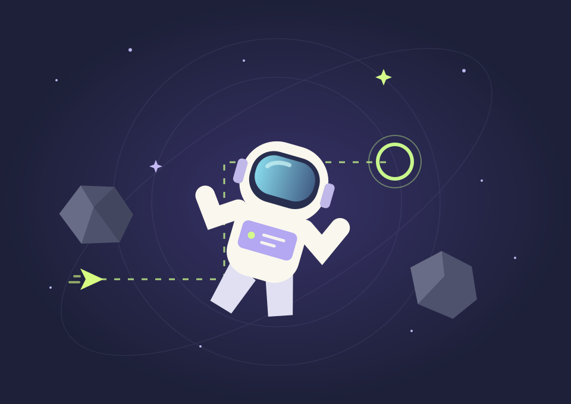

✳ UN DÍA, UN NUEVO UNIVERSOTu próxima
Tu próxima
pequeña obsesión.
Juegos originales, hechos uno a uno.
Entra, descubre algo distinto y vuelve por más.
UN JUEGOcada
díaNINGUNO IGUAL
díaNINGUNO IGUAL
Sin descargas.
Sin cuentas.
Solo un buen rato.

LO MÁS NUEVOLOS FAVORITOS DE LA COMUNIDAD
Ranking global · PróximamenteTop 5 más jugados
Aún sin datos suficientes
Todavía no contamos partidas globales. Aquí aparecerán los juegos más jugados cuando haya datos reales, sin confundir visitas con partidas.
El ranking mostrará hasta 5 juegos cuando haya estadísticas globales de partidas.
Descubrir todos los juegosPEQUEÑOS MUNDOS, GRANDES PAUSAS
Todos los juegos0
Elige una categoría o busca por nombre, tema o forma de jugar.
Preparando la colección…
ESTO APENAS COMIENZAMañana, otra idea.
Mañana, otra idea.
Siempre algo distinto.
Un experimento creativo: construir un juego original cada día. Nuevas mecánicas, nuevos retos y ninguna copia del anterior.
El catálogo crecerá con cada lanzamiento. Explora puzles, arcade y estrategia: cada mundo propone una forma distinta de jugar.